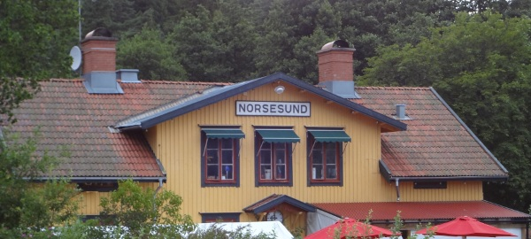

Kategori:Västergötland
Fin och välbultad sportklippa mellan Floda och Alingsås. Mest vertikal klättring. Rejäl höjd (10-15 meter) på flera av lederna men Korpen som häckar på klippan har skitar ned en hel del (bokstavligt talat).
Klippan är sydöstvänd och har sol på sig under större delen av dagen. Vissa delar av klippan är skymd av träd. Korp häckar under det stora taket vilket medför accessbegränsningar (se längre ned).Närheten till västra stambanan är klart störande vilket smittat av sig på lednamnen. Norsesund har utvecklats till Alingsås största sportklätterklippa och blivit ett bra komplement till Korpaberget med bättre spridning av graderna. Klättringen varierar från lättare vertikal till hård överhängande sådan. Inslag av takklättring existerar. Alla leder på klippan är välbultade och utrustade med firningsankare av Alingsås klätterklubb (tack till High Sport butiken). Se upp för lösa partier! Mycket har rensats bort men fortfarande lossar grepp.
Från Göteborg mot Alingsås, sväng av E20 mot Ingared/Norsesund. Fortsätt mot Norsesund och tag höger efter att ha kört under järnvägen. Följ denna väg en knapp kilometer och parkera med omdöme vid den lilla järnvägsövergången på andra sidan klippan. Klippan syns genom träden upp till vänster (åt nordväst).
Ta Alingsåspendel ifrån Norsesund station. Följ en vanlig bilväg, i spårets riktning mot Alingsås. När du har efter en kilometer gått förbi alla bostäder ser du en liten järnvägsövergång, fortsätt 50 meter till och du börjar se klippan inne i skogen på din vänstra sida.
Se Hans Rapp topo:
Vänster om de lederna som står i den nya föraren finns det fyra stycken lätta leder på ett klippparti "lite nedanför"... De lederna beskrivs inte här ytterligare. Nedanstående leder är på själva "huvudklippan", från vänster till höger.
Kategori:sport
kategori:Saknar skiss
kategori:Saknar vägbeskrivning
kategori:Saknar leder
kategori:Saknar koordinater
kategori:Saknar skrivarformatering
Copyright (C) Permission is granted to copy, distribute and/or modify this document under the terms of the GNU Free Documentation License, Version 1.3